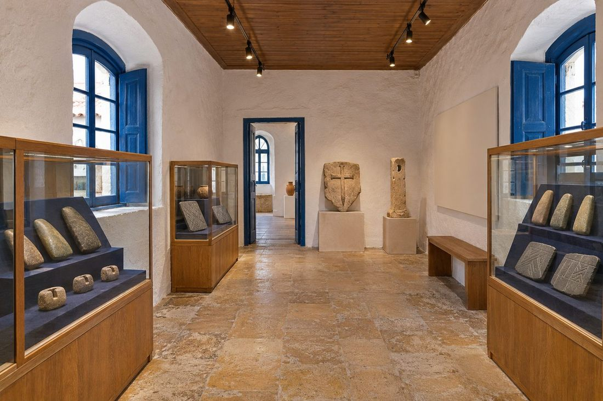

Visita virtual · Museu Municipal
Arqueologia, etnografia e o Legado Andalusino, em panorâmicas de 360°. Vinte e duas peças para conhecer de perto.
Rode o telemóvel para ver maior.
As imagens desta visita são reconstituições artísticas das salas, feitas a partir da descrição oficial do museu. Não substituem o registo fotográfico do espaço nem o inventário das peças. Os textos das peças carecem de validação pelo museu.
Voltar aos museus de Aljezur
Ver todos os espaços